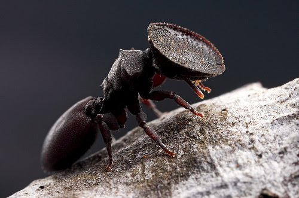
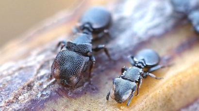
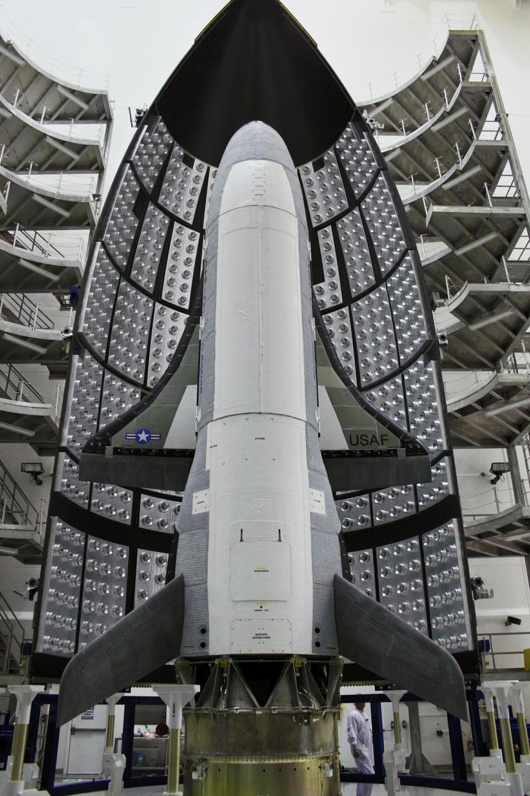
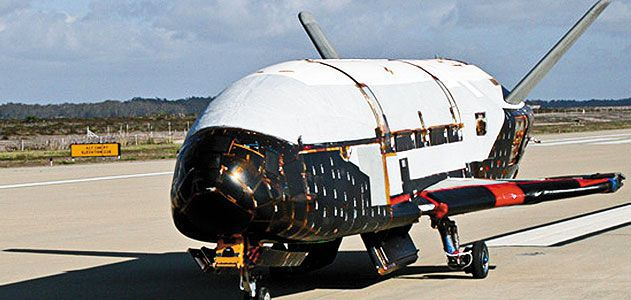

| INICIO | CIENCIA | TECNOLOGÍA |
las Hormigas Tortuga: Usualmente pensamos en la evolución como un proceso que corre inevitablemente hacia adelante Evolución Flexible: Una especie de hormigas con cabeza gigante, sin embargo, parece dar pistas de que la dinámica puede ser mucho más compleja, con transformaciones que las hacen volver a formas del pasado. TECNOLOGÍA El misterioso avión orbital de la Fuerza Aérea de EE.UU:Lo que se sabe de la nueva misión del X-37B, el misterioso avión orbital de la Fuerza Aérea de EE.UU. “Un gran paso”:La aeronave que tiene el récord de más días consecutivos en órbita volverá a despegar a mediados de mayo. El X-37B realizará numerosos experimentos en el espacio, aunque la Fuerza Aérea estadounidense no brindó muchos detalles sobre ellos. |

   |